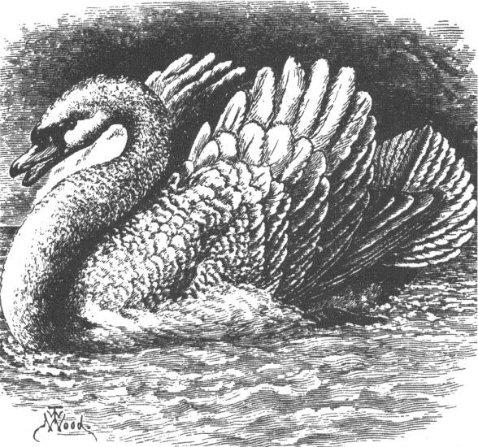
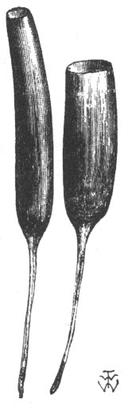
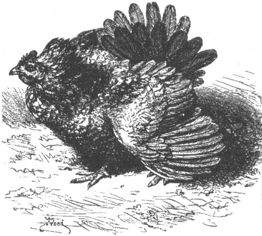
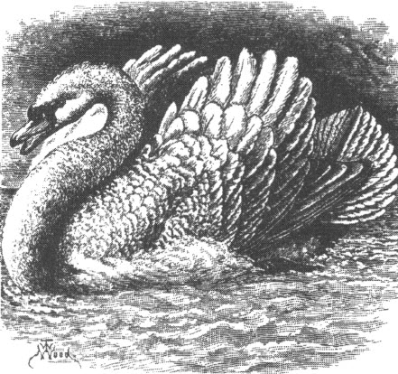
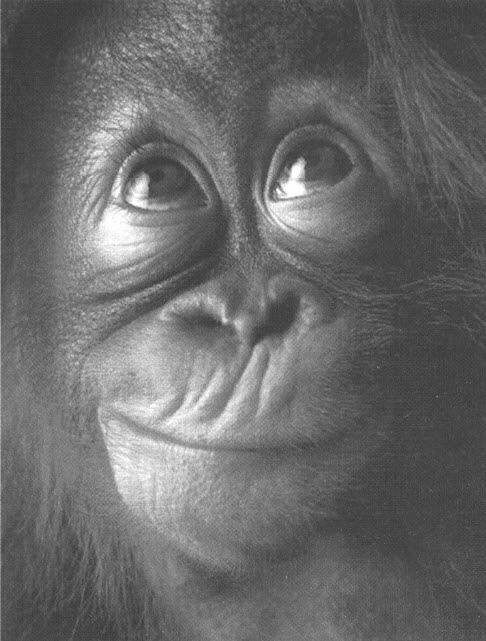

第4章
动物的表情方法
·Means of Expression in Animals·
各种极不相同的声音在不同的情绪和感觉之下发生出来的原因，是非常模糊不明的。不能认为，这个在声音方面存在着任何显著差异的法则，是普遍适用的。有时恐怕不可能去提供出各种在不同的精神状态下所发出的特殊声音的原因和来源的详细说明来。我们知道，有些动物在被驯养以后，就获得一种习惯，就是会发出它们原来所没有的声音来。

天鹅（swan，鹄）在发怒的时候，也张开双翼和翘起尾羽，并且使羽毛直竖起来。它们张开了嘴，用双脚划水，并且向前作迅速的小跃进，去对抗任何一个向水边走得太近的人。
声音的发出——有声的音——另一种方法所发出的声音——皮肤的附属物，毛发、羽毛等在愤怒和恐怖的情绪下的竖直现象——双耳向后牵伸是作战的准备，也是愤怒的表现——双耳竖直和头部抬起，是注意的特征
在这一章和下面一章里，我将单单采用那些满足于说明我的问题方面的详细情节，来叙述大家知道的不多几种动物在不同的精神状态下的表情动作。可是，依照正常的次序在考察这些表情动作以前，先讨论大多数这些动物所共有的几种表情方法，以避免很多无用的重复叙述。
声音的发出——在很多种类的动物（连人类也包括在内）方面，作为表情手段的发声器官起有极其重要的作用。在前面一章里，我们已经知道，在感觉中枢受到强烈的激奋时候，身体的肌肉就普遍被投入到激烈的活动状态里去；结果，这只动物就发出高大的声音来，不管它通常是不发出声音的，而且这些声音并没有多大用处，也是这样。例如，我以为，野兔 (1) 和家兔除了受到极大苦痛，从来不使用它们的发声器官；例如只有在猎人把受伤的野兔杀死的时候，或者在一只白鼬（stoat）捕捉住一只小家兔的时候，它们才会发出声音来。牛和马时常静默无声地忍受很大的苦痛；可是，如果苦痛太过分，尤其是再和恐怖联合在一起，那么它们就会发出可怕的声音来。我以前在巴姆巴斯草原（南美草原）里，时常辨认出，远处在猎人用套索（lasso）捕牛和割断它的腿筋时候，就传来了它的苦恼的垂死的吼叫声。据说，在狼群进攻马的时候，马就发出高大的特殊的悲鸣声来 (2) 。
胸部和喉部的肌肉由于上述情形而被激发起来的那些无意的和无目的的收缩，可以最初引起声带的音发出来。可是，这种声音现在就被很多动物广泛使用在各种不同的目的方面；大概在其他情况下，习惯在声音的使用方面起有重大的作用。自然科学家们已经指出说，而且我也确实地相信，社会性动物因为习惯上把自己的发声器官使用作为互相交际的手段，所以在其他情形里也就比其他的动物更加自由地使用这些器官。可是，这个法则显然也有例外的情形，例如家兔就是这样。还有，那个具有广泛影响范围的联合原理，也在这里起有相当的作用。因此，我们可以知道，因为声音在那些引起愉快、苦痛、大怒等情绪的一定的条件下习惯上被使用，作为有用的帮助，所以每当同样的感觉或者情绪在完全不同的情况下，或者在程度较微弱的时候，声音也就通常被使用了。
有很多动物的雌雄两性，在发情期间里彼此不断地互相呼唤；有不少的例子，表明出雄性动物就用这种呼唤方法来企图使雌性受到诱惑和兴奋。实际上，正像我在自己所著的《人类的起源及性选择》（Descent of Man Selection in Relation to Sex ）这本书里所打算表明的，大概这就是声音的原始使用和发展方法）。因此，发声器官的使用，大概就会去和动物所能够感觉到的最强烈的愉快的预料互相联合起来。那些过着社会性的群居生活的动物，在离开自己的集团以后，时常彼此相呼，而在重逢的时候显然就感到十分快乐；例如，我们可以看到，一匹马在回返到另一匹在嘶鸣着找它的同伴身边时候，就发生这种情形。母亲时常不断地呼唤着自己的失踪的幼儿，例如母牛呼唤着它的小牛；而很多幼小的动物则呼唤着它们的母亲。在羊群分散开来的时候，母羊就不断咩咩地叫寻着自己的小羊；当母子两羊相会的时候，它们互相的愉快情状是明显可见的。如果有人去作弄巨大凶猛的四足兽的幼儿，而这些四足兽听到了幼儿的悲痛叫号，那么这个人就会有大祸临身。大怒引起全身一切肌肉连发声的肌肉在内，都非常紧张起来；有些动物在大怒发作的时候，就尽量用自己的威力和残暴的样子去使敌方感到恐怖；例如，狮子发出吼叫声来；猎狗发出怒噑声来。我可以断定说，它们的目的是要使对方感到恐怖，因为狮子在咆哮时候还同时把自己的鬣毛竖直起来，而猎狗则在怒噑时候也把自己背部的毛竖直起来，因此它们在尽量设法要使自己变得好像又大又可怕的样子。雌性的相斗的动物，就企图用自己的叫声来助威和互相挑战，结果也就引起了决死的斗争。因此，声音的使用大概就这样和愤怒的情绪联合起来了，而且它总是会被愤怒所引起的。还有，我们也看到，剧烈的苦痛，也好像大怒一样，会引起猛烈的大声叫喊来，而且在尖声绝叫时候用尽全力来使自己的苦痛减轻一些；因此，声音的使用大概就和任何一种受苦情形联合起来了。
各种极不相同的声音在不同的情绪和感觉之下发生出来的原因，是非常模糊不明的。不能认为，这个在声音方面存在着任何显著差异的法则，是普遍适用的。例如，在狗的方面，它们在愤怒时候的吠叫声和在快乐时候的吠叫声并没有多大差异，不过还能够被辨别出来。有时恐怕不可能去提供出各种在不同的精神状态下所发出的特殊声音的原因和来源的详细说明来。我们知道，有些动物在被驯养以后，就获得一种习惯，就是会发出它们原来所没有的声音来。 (3) 例如，家狗，甚至是驯养的胡狼，也学会了一种狺狺的大叫声，而这种声音对狗属的任何一种说来都不是固有的；据说，只有北美洲的一个种北美郊狼（Canis latrans）才是例外，它会作出这种吠叫声来。在家鸽当中，也有几个品种学习到了发出一种新的完全特殊的咕咕声来。
赫伯特·斯宾塞先生 (4) 在他的关于音乐方面的有趣的论文里，曾经讨论到人的声音特征和各种情绪对声音的影响。他清楚地指明说，在不同的条件下，声音的响度和性质，就是它的共鸣（resonance）、音色（timbre）、音调（pitch）和音程（interval），会发生很大的变化。任何一个人只要去倾听一下雄辩的演说家或者说教者的声音，或者去倾听一个人在愤怒地斥责另一个人的声音，或者去倾听一个吃惊的人的声音，那么就会惊奇地相信斯宾塞先生的意见确实不错。使人感到很有趣味的是：在人的一生当中，声音的转调（modulation）是多么早地转变成为富于表情。在我的小孩当中，有一个年纪还不到2岁的小孩；我已经清楚地辨认出，他的表示同意的“嗯姆”（humph）的声音由于略微有些转调而具有很强烈的表情性质；还有一种表示否定而发出特殊的哭声表示出了他的顽强的决断力来。斯宾塞先生接着又表明说，富于表情的说话，从上面所有各点看来，是和声乐（vocal music）有密切关系的，因此也是和器乐（instrumental music）有密切关系的；同时他打算要用生理学上的论据，就是要用“感情是一种对肌肉动作的刺激物这个普遍的法则”，去说明声乐和器乐双方的特殊的特征。可以承认说，声音也受到这个法则的支配；可是，我以为，这种说明未免太普遍，而且也不太明确，因此也很难使人明白普通的说话和富于表情的说话（或者唱歌）之间的各种差异来，但是当中只有响度的差异则是例外。
无论是我们相信声音的各种不同的性质起源于强烈感情的兴奋下的说话活动方面，因而这些性质后来就被转移到声乐方面去；或者是我们也像我所主张的说法，去相信这种发出乐声来的习惯起初在人类的最早的祖先时代作为求爱的手段而被发展起来，因此以后这种习惯就开始去和人类祖先所能达到的最强烈的情绪（就是热烈的爱情、竞争和胜利）联合起来——这两方面都可以用斯宾塞先生的意见来获得良好的说明。大家都知道，动物发出律音（musical notes）来，例如我们每天可以从鸟类的鸣唱方面听到这些律音。有一个更加显著的事实，就是有一种猿（ape），是长臂猿属（gibbons）的一种，能够精确地发出律音的八音度（octave）来，而且会作每隔半音的升降音阶；因此，这种猿“被大家认为是所有野性的哺乳类动物当中的唯一能够歌唱的动物”。 (5) 从这个事实里和从其他动物的类似情形里，我们就可以得出结论说，人类的祖先大概在获得一种音节分明的说话能力以前，已经会发出乐音；因此，当声音在任何强烈的情绪下被使用的时候，按照联合原理，它就有一种倾向，要去采取一种音乐的性质。我们可以明显地看出，在有几种比较低等的动物当中，雄性动物发出自己的声音来，使雌性动物感到愉快；它们本身也对自己所发出的声音感到愉快；可是，为什么要发出特殊的声音来，而且为什么这些声音会使它们感到愉快，这个问题现在还不能得到说明。
音调的高低对于一定的感情状态具有某种关系；这一点是相当使人明白的。一个人在温和地诉说虐待情形或者轻微的受苦情形时候，差不多时常用高音调的声音来说话。狗在有些不耐烦的时候，时常发生一种通过鼻腔的像管乐的高律音来；这种声音像悲哀声一样，立刻打动了我们的心； (6) 可是，如果要去知道究竟这种声音是不是真正的悲哀声，或者在这种特殊情形里，只是因为我们已经从经验上学习到它所表示的意义，而想来是这样的罢了，那么这就会有多么的困难呀！伦奇尔肯定说， (7) 他在巴拉圭（Paraguay）地方捕捉到一些猿（就是阿柴拉卷尾猿，Cebus azarae ）；这些猿发出一种嘈声，它一半是管乐音，另一半是半咆哮声，表明出吃惊来，又用比较低沉的猪叫声重覆发出咻——咻（hu hu）的音，表达出愤怒或者不耐烦来；并且还用尖锐的绝叫声表明出惊恐和苦痛来。另一方面，就是关于人类方面，他的低沉的呻吟声和非常刺耳的高声尖叫，同样表达出一种极度的苦痛来。人的哭声可以有高有低；因此，正像哈莱尔（Haller）很早就指出的， (8) 成年的男人的笑声在声音性质上接近于元音O和A（德文字母的发音）；而小孩和妇女的笑声则具有更加多的E和I；好像黑尔姆霍兹所指出的，E和I这两个元音自然要比O和A两个元音具有较高的音调；可是，这两种笑声都同样表达出快活或者喜悦来。
我们在考察到声音的发出所用来表达情绪方式的时候，就自然必须去研究那种在音乐上叫做“表现”（expression）的原因。李奇菲耳德（Litchfield）先生对音乐问题有长期的研究；他很亲切地向我提供了下面一些关于这种原因的意见：“关于音乐的‘表现’的本质究竟是什么这个问题，还包含着很多模糊不明的疑点；据我所能知道的，这些疑点直到现在还是没有解决的谜题。可是，如果任何一种法则可以正确适用于那种用简单的声音来作出的表情方面，那么它也应当在某种程度以内适用于更加发展的唱歌的表现方式；我们可以把唱歌看做是各种音乐的原型。唱歌的情绪效果，大部分都依据那种用来发生歌音的动作的性质来决定。例如，在那些表现出热情非常奋发的歌曲里，效果时常主要依据一段或两段需要用力加强发声的特征性乐节来决定；因此，时常可以注意到，如果不很努力地用特征性乐节所需要的一种具有足够的力量和音域的声音去歌唱，那么这一只具有这种性质的歌曲就会丧失它的原有的效果。显然无疑，这就是一只歌曲由于从一种曲调转变成另一种曲调而时常会丧失效果的秘密。因此，我们就可以知道，效果不单单是依据声音本身来决定，而且一部分也依据那种发出这些声音来的动作的性质来决定。的确，显然每次在我们感觉到一只歌曲的‘表现力’根据节拍的加速或者减慢情形、音调变化的流畅、发声的响度等来决定的时候，我们实际上就采用我们在一般解释肌肉动作时候所用的方法，同样地去解释发声的肌肉动作。可是，这种方法还不能够去说明我们所称做歌曲的音乐上的表现的那种更加细微的和更加特殊的效果，就是不能够去说明那种被它的旋律（melody）所提供出来的欣喜，或者甚至是那种被各个构成旋律的分离的音所提供出来的欣喜。这是一种难以用文字来明确表达的效果；据我所能够知道的，决没有人曾经把它分析成功过；赫伯特·斯宾塞对于音乐的起源方面具有聪明的见解，但是也仍旧完全没有说明它。可以肯定说，这个原因就在于：一组声音的旋律上的效果，完全不是根据这些声音的响度或者柔度来决定，或者也不是根据它们的绝对的音调（absolute pitch）来决定。一只曲调，不管它被唱得响亮或者柔和，不管它被小孩或大人来唱，也不管它是用笛或者用喇叭来演奏，总是一般无二的。一个音的纯粹音乐上的效果，就根据它的那个在术语上叫做‘音阶’（Scale）的地位来决定；因此，同一个音，就要看它在和哪一组音互相联系时候被我们听到的情形，而对我们的耳朵发生完全不同的效果来。
一切被总括在‘音乐上的表现’这个成语里的主要的特征性的效果，都是根据这种把某些音作相对的联合的情形来决定的。可是，为什么某些音的一定的联合会具有如此这般的效果，这还是一个留待将来去解决的问题。这些效果，的确应该是和大家都知道的、在那些构成音阶的音的振动速率（rates of vibration）之间的算术上的关系，有着某一种相互的联系的。而且也有可能来说（这只不过是一种猜测罢了），人类的喉部通气道的振动机关在从一种振动状态转移到另一种振动状态时候所达到的或大或小的机械上的熟练程度，也就成为各种不同的音序（sequences of sounds）所发生的或大或小的愉快的最初原因”。
可是，如果我们把这些复杂的问题搁下不谈，而专门来考察比较简单的音，那么我们至少也能够去查明几个用来使一定种类的音去和一定的精神状态联合起来的原因。例如，幼小的动物或者社群当中的一分子为了呼喊求救而发出的尖叫声，自然是响亮、拖长而且高大的，这样才可以传播到远处去。要知道，黑尔姆霍兹曾经指出说， (9) 由于人的耳朵的内腔形状和它所引起的共鸣能力，高音律就产生出特别强烈的印象来。在雄性动物为了取得雌性动物的欢喜而发出声音来的时候，它们自然要去采用那些对这种动物的耳朵发生愉快感觉的声音；看上去，同样的声音，时常会使极不相同的动物感到愉快；这个原因就在于它们的神经系统彼此相似；例如我们可以用下面的事实来使人相信这个说法：鸟类的鸣唱使我们发生愉快感觉，甚至某些雨蛙（tree-frog）的阁阁声也会使我们愉快。从另一方面看来，那些为了使敌方感到恐怖的威胁而发出的声音，自然就应该是粗嘎的或者不愉快的了。
究竟对立原理是不是也像我们大概可以预料到的情形那样，对声音的发出方面起作用，这还是一个疑问。人类和各种不同的猿在愉快时候所发出的断续的笑声或者嘻笑声，是和他们在遇到灾难时候所发出的拖长的尖叫声极其不同。猪在对自己的食料感到满意时候所发出的深长的喉声，也是和它在苦痛或恐怖时候所发出的粗嘎的尖叫声完全不同的。可是，正像刚才所指出的，狗在愤怒时候和在快乐时候的吠叫声，却绝不是彼此绝对相反的；还有一些其他的例子也是这样的。
还有一个关于这方面的疑问，就是：究竟是那些在各种不同的精神状态下所发出的声音在决定嘴的形状，或者是嘴的形状在被其他独立的原因所决定，而声音也因此发生了变化。幼小的婴孩在哭喊时候，就把他的小嘴张大；这种情形，显然是为了要发出充分的音量来而必须这样的；可是，这时候由于一种完全不同的原因，嘴就采取了近于四方形的形状；后面将要再说明这种情形；它是由于眼睑紧闭和上唇因此被提升起来而形成的。我不打算在这里谈到，究竟嘴的这种四方形使号泣声或者哭喊声变化到什么程度；可是，我们可以从黑尔姆霍兹和其他研究家的研究著作里知道，口腔和嘴唇的形状在决定着嘴里所发出的元音的性质和音调高低。
在后面有一章里，也将表明出，在轻蔑（contempt）或者厌恶（disgust）的感情之下，由于一些明显的原因，就发生一种要从嘴里或者鼻孔里吹出气来的倾向；这就产生出一些像是pooh（普）和pish（批）的声音来。在任何一个人受到惊吓或者突然吃惊的时候，立刻也由于一种明显的原因而发生一种倾向，就是要把嘴张大，作一次又深又快的吸气，以便准备去作长久的努力。此后，在接着作充分的呼气时候，嘴略微闭紧，同时双唇则由于那些将在下面讨论到的原因而略微向外伸出；据黑尔姆霍兹所说，这时候如果终究有声音被努力发出，那么这种形状的嘴就会发出元音O（哦）的声音来。例如，可以听到，有一群人在亲眼看到某种使人吃惊的景象以后，的确就会全体发出一种又深又长的惊叹Oh！（哦呀！）来。如果在发生惊奇的同时，还感到苦痛，那么就会出现一种倾向，要把全身连面部在内的所有肌肉收缩起来，于是双唇就会向后退缩；这种情形大概也就说明声音变得较高而且具有Ah！（啊！）或者Ach！（啊嘿！）的性质。因为恐惧引起全身的所有肌肉发生颤动，所以这时候的声音也就变成颤声；同时由于唾液腺停止分泌作用，使嘴里变得干燥，因此声音变得沙嘎。人类的笑和猿类的嘻笑，为什么总是发出一种迅速而反复的音来，这个问题还不能够得到说明。在这些音发出的时候，嘴角向后退缩和向上牵伸，因此嘴就被横向伸长起来；在后面有一章里，我们打算再来说明这个事实。可是，那些在不同的精神状态下发生出来的音彼此不同这个问题，整个还是非常模糊不清的，因此我也未必能够对它作出什么说明来；我已经提出的这些意见，只具有无关紧要的意义。
直到现在为止，一切已经提到过的声音，都是依靠呼吸器官而发出来的；可是，有些用完全不同的方法所产生出来的声音，也是具有表情的。家兔用力在地面上踏出脚步声来，这是一种传达给它们的同伴的信号；如果有人懂得怎样可以去确切地作出这种声音来，那么他就会在静寂的晚上，听闻到四周各处的家兔都在用踏步声回答他所发出的信号。这些动物，也像其他一些动物那样，在发怒的时候就在地面上踏脚步。豪猪（porcupine）在发怒时候，就使自己的刺毛发出沙沙的声音来，并且把尾巴不断摇摆起来；有一只豪猪，在看到一条活蛇被放进到自己的铁笼里来时候，就作出这种样子来。它的尾巴上的刺毛，是和身体上的刺毛很不相同的：它们是短的、中空的、而且薄得像鹅毛管，顶端被横截开来，所以是开口的；它们被又长又细而有弹性的内茎所支持着。当豪猪把尾巴急速摇摆的时候，这些中空的刺毛就彼此互相碰撞，因此发出一种特殊的连续的声音，正像我在巴尔特莱特先生面前所听到的情形那样。我以为，我们能够理解到，豪猪为什么靠了自己的保卫用的刺针的变异，而获得了这种特殊的发声器具的配备（参看图11）。它们是夜行的动物；如果它们嗅出和听到一只暗中埋伏的食肉猛兽的动静，那么它们在黑暗里向敌方发出警告，来表明出自己是什么样的动物和具有可怕的刺针的配备这种举动，是对自己有利的。因此，它们就会避免受到攻击。我可以补充说，它们是多么充分意识到自己的武器的威力，所以在大怒发作的时候，它们就会把刺毛竖直，转过身子，而且使身体采取倾斜的位置，于是向敌方进攻。

图11 豪猪尾巴上的发声的刺毛
有很多鸟在它们求雌的期间里，就用特殊适应的羽毛来发出各种不同的声音。鹳（stork）在性欲兴奋的时候，就用嘴发出高大的格格声来。有些蛇发出轧砾声或者嘎嘎声来。很多昆虫用自己的坚硬的膜翅的特别变异部分互相摩擦，来发出唧唧声。这种唧唧声通常是作为一种性的诱惑力或者呼唤而被使用的；可是，它也被用来表明不同的情绪。 (10) 每一个管理过蜜蜂的人，都知道它们在发怒的时候会把原来的嗡嗡声发生变化；这种怒声是作为一种提出要有刺螫的危险发生的警告而被使用的。我之所以要作出所有这些少数的意见来，就因为有几个著者偏爱过分去强调说，发声器官和呼吸器官好像是特别适应于表情方面的东西，因此我以为，在这里来表明一下那些用另一些方法所发出的声音也同样对于这个目的有良好的用处，也是一件适当的事情。
皮肤附属物的竖直——任何一种表情动作，恐怕都没有像毛发、羽毛和其他皮肤附属物的不随意的竖直这样普遍地存在的了，因为在脊椎动物的三大纲里面普遍都具有这种表情动作。 (11) 这些皮肤附属物是在愤怒或者恐怖的兴奋影响下，被竖直起来的；在这两种情绪同时配合一起，或者彼此很快地相继发生的时候，这种现象就特别显著地发生出来。这种动作是为了使动物本身在它的敌方和竞争者们的眼睛里，显出更大而更可怕的样子来，而被使用的；通常还同时发生各种不同的、也是适合于这个目的的有意动作来，并且发生凶暴的声音来。巴尔特莱特先生已经对各种不同的动物的研究方面具有最广泛的经验，也毫不怀疑地认为这是确实的情形；可是，皮肤附属物的这种竖直的能力究竟是不是最初就为了这个特殊目的而被获得的，这还是一个没有解决的问题。
首先我要来举出相当多的事实，来表明这种动作在哺乳类、鸟类和爬行类动物当中有多么的普遍；至于我要说的关于人类方面的话，那么我打算留到后面的一章里再谈。动物园里的聪明的饲养员塞登（Sutton）先生，替我细心观察了黑猩猩和猩猩；据他所说，在它们突然受到惊吓的时候（例如由于打雷而受惊），或者在它们被人激怒的时候（例如由于受到捉弄而发怒），它们的毛发就竖直起来。我曾经看到一只黑猩猩，它因为望见一个运煤的黑人而发生惊慌，同时它的全身的毛发都竖直起来；它向前作了几次小跃进，好像要去进攻这个人似的；据这个饲养员说，它并没有任何实际要去进攻对方的企图，只不过具有一种想要吓唬对方的希望罢了。福尔德（Ford）先生曾经记述道， (12) 在大猩猩（gorilla）大怒的时候，它的头发毛“竖直而且向前突出，它的鼻孔扩张开来，下唇低垂，同时发出独特的呼喊声，看上去好像要把敌人吓退似的”。我曾经看到，在大狒狒（Anubis baboon ）发怒的时候，它的毛沿着背部从头颈直到腰间都直竖起来，但是它的臀部和身体的其他部分上的毛则没有竖直。我曾经把一条剥制好的蛇放进猿的铁笼里，当时就有几种猿的毛发竖直起来；我特别注意到一种长尾猿（Cercopithecus nictitans ），它的尾巴上的毛特别显著地竖直起来。勃烈姆（Brehm） (13) 说道，有一种狮猴（Mides aedipus ，属于美洲区系的猿）在受到激奋时候，就把自己的鬣毛直竖起来；他还补充说，这是为了要尽量使自己变得更加可怕。
食肉动物的毛发直竖现象，大概是很普遍的，而且同时也发生威吓行动、牙齿外露和凶暴的咆哮。我曾经看到， （猫鼬，Herpestes ）的全身毛发，连尾巴在内，几乎都直竖起来；鬣狗（Hyaena）和土狼（Proteles）把背脊毛非常显著地直竖起来。发怒的狮子把自己的鬣毛直竖起来。大家也都知道，狗的颈部和背部的毛会直竖起来，而猫的全身毛发，特别是尾巴毛，都会直竖起来。猫显然只有在恐惧的时候，才把毛发直竖起来；而狗则在愤怒和恐惧时候都会把毛发直竖起来；可是，据我所能够观察到的说来，当一只猎狗在预料要受到一个严厉的饲养者鞭打的时候，它的毛发却并不因为这种屈辱的恐惧而直竖起来。可是，如果狗表示要作反抗的斗争，像有时会发生的情形那样，那么它的毛发也会竖直起来。我曾经时常注意到，如果狗一半发怒和一半害怕，例如它在黑暗里辨别不清某种物体的时候，那么它的毛发就特别容易竖直起来。
有一个兽医向我肯定说，他时常看到，有些曾经被他医治过的马和牛，在再要受到他的医疗手术时候，就会把毛发直竖起来。当我把一条剥制好的蛇送给西貒（peccary）看的时候，它就以惊人的样子把自己的背部的毛直竖起来；野猪（boar）在大怒时候也是这样的。美国有一种用角撞死人的麋（Elk）；据有人记述，它起初舞动双角，由于大怒而发出尖叫声，并且用脚踢地面，“最后，就看到它的毛发上升起来，并且竖直”；于是它就向前急冲，进攻对方。 (14) 在山羊用角进攻敌人的时候，它的毛发也同样直竖起来；我听到勃里斯先生说，有些印度羚羊也是这样的。我曾经看到，多毛食蚁兽（hairy anteater）和啮齿目的一种动物刺鼠（agouti）把它们的毛发直竖起来。有一只被关在笼子里的雌蝙蝠， (15) 在哺育着它的小蝙蝠；当有人朝着笼子看望的时候，“它的背部上的软毛就直竖起来，并且恶狠地咬着外面伸进笼子里的手指”。
那些属于主要的目的鸟，在愤怒或者受惊的时候，就竖起自己的羽毛来。大家都已经看到过，两只雄鸡，即使还是十分幼小，也会竖直起颈部长羽，作着斗争的准备；这种羽毛在竖直的时候绝不能用来当做防御手段，因为斗鸡的爱好者们根据自己的经验来肯定说，把这些颈羽修剪去，反而有利。雄性的流苏鹬（ruff，学名Machetes pugnax ） (16) 在相斗时候，也把羽毛领子直竖起来。在一只狗走近一只带领着小鸡的普通母鸡时候，这只母鸡就会张开双翼，翘起尾羽，把全身羽毛都直竖起来，尽可能做出更加凶恶的样子来，向着冒犯者冲去。同时，它的尾羽并不经常正确保持在同样的位置上；有时它翘起得太过分，正像现在所附的图画上的情形（图12），因此使中央的尾羽几乎接触到背部了。天鹅（swan，鹄）在发怒的时候，也张开双翼和翘起尾羽，并且使羽毛直竖起来。它们张开了嘴，用双脚划水，并且向前作迅速的小跃进，去对抗任何一个向水边走得太近的人（图13）。据说热带鸟 (17) 在有人扰动它们的巢时候，并不飞逃，却“单单耸起自己的羽毛，并且发出尖叫声来”。仓鸮（barn-owl）在有人接近它的时候，“立刻就把羽毛蓬松开来，张开双翼和尾羽，并且用嘴发出有力的迅速的咝咝声和喀喀声来”。 (18) 鸮的其他的种也会做出这些动作来。根据勤纳·惠尔（Jenner Weir）先生告诉我的话，鹰（hawks）也曾在同样的情况下把羽毛直竖起来，并且张开它们的双翼和尾羽。有几种鹦鹉也会把羽毛直竖起来；还有，我曾经看到，鹤鸵（食火鸡，cassowary）在看见食蚁兽而发怒的时候也采取这种举动。鸟巢里的小杜鹃（布谷鸟），会把羽毛直竖起来，把嘴张开得很大，并且尽可能使自己的样子变得更加可怕。

图12 母鸡在把狗赶开自己的小鸡时候所采取的形状 （武德先生的写生画）

图13 天鹅在把侵犯者赶开的时候的形状 （武德先生的写生画）
我又听到惠尔先生说，有些身体小的鸟，例如雀科鸣禽（finches）、莺（颊白鸟，buntings）、鹀（warblers），在发怒时候也把全身羽毛直竖起来，或者只是把颈部的羽毛直竖起来；或者它们张开双翼和尾羽。当它们的羽毛达到这种状态的时候，它们就用张大的嘴和可怕的姿态，彼此相向冲奔。惠尔先生根据自己的广博经验来作结论说，羽毛的直竖现象，与其说是由于恐惧而发生，倒不如说大都是由于愤怒而发生，他举出一只极容易发怒的金翅雀（goldfinch）的变种为例；当一个仆人走得太接近它的时候，它立刻就使自己的身体变成一个有直立羽毛的圆球形。惠尔先生认为，鸟类在受惊时候，通常把全身羽毛紧贴在身上，因此它们的体积反而减小得时常使人吃惊。当它们从恐惧或者惊奇里面一恢复原状的时候，它们首先所做的事情，就是抖动自己的羽毛。惠尔先生曾经注意到，对于这种由于恐惧而把羽毛紧贴和使身体外表缩小的情形，可以用鹑（quail）和阿苏儿（长尾小绿鹦鹉，grass-parrakeet） (19) 来作为最良好的例子。可以明白，这些鸟所以具有这种习性，就在于它们已经惯常在遇到危险时候，或者蹲伏在地面上，或者静伏在树枝上不动，以避免敌方的注意。虽然在鸟类方面，愤怒可以成为使它们羽毛直竖的主要的最普通的原因，但是当有人向着鸟巢里的小杜鹃探望的时候，还有当狗走近一只带领着小鸡的母鸡那里的时候，小杜鹃和母鸡至少是怀着几分恐怖的。铁格特米尔（Tegetmeier）先生告诉我说，很早就认为，斗鸡在斗鸡场里把头部的羽毛直竖的现象，就是一种胆小的表征。
有几种蜥蜴的雄性，在它们的求雌期间里，会互相斗争起来，同时把喉囊或者漏斗体（襞状部，frill）胀大起来，而且把背脊向上弓起。 (20) 可是，衮脱尔（Günther）博士以为，这些蜥蜴不会竖起自己的各种背棘或者鳞片来。
因此，我们可以看到，在脊椎动物的全部两个最高的纲（哺乳纲和鸟纲）里和在几种爬行动物方面，多么普遍地发生这种在愤怒和恐惧之下把皮肤附属物直竖起来的情形。正像我们从罕里喀尔（Kölliker）的有趣的发现方面所知道的，这种竖直行动是由于细小的、不随意的平滑肌收缩的影响而发生的； (21) 这些肌肉时常被叫做立毛肌（Arrectores pili ）；它们附着在各根毛发、羽毛等的毛囊里。例如，我们从狗的方面可以看到，由于这些肌肉的收缩，狗的毛发就能够立刻被直竖起来，同时还从毛囊里面略微向外伸出一些；后来，这些毛发就很快倒伏下去。在有毛的四足兽的全部身体上，都覆满着无数这些极小的肌肉，真使人感到惊奇。可是，在有些情形里，例如在人的头部方面，要靠了那些位在较深处的皮下肌层（Panniculus carnosus ）的横纹的随意肌的帮助，才能使头发直竖起来。刺猬也是靠了这些肌肉来举起它的刺针的。从莱第格（Leydig） (22) 等人的研究方面，也可以认为，横纹的肌肉纤维是从皮下肌层延长到有些较长的毛发处去的，例如延长到有些四足兽的口须那里去。立毛肌不仅在上述的情绪下收缩起来，而且也由于寒冷对皮肤表面的作用而收缩。我记得，以前我把骡子和狗从低下的温暖的地区携带到山上，在寒冷的安第斯山脉上面露宿一夜以后，它们好像受到了极厉害的恐怖，把全身的毛发都直竖起来。当我们在热病发作以前发生寒战的时候，我们的身上就出现鸡皮（goose-skin），因此我们也可以观察到毛发直竖的动作。李斯脱（Lister）先生也发现， (23) 在毛发附近的皮肤上搔动，会引起这些毛发竖起和突出。
从上面这些事实里可以明显看出，皮肤附属物的直竖，就是一种不依存于意志的反射作用；当这种作用在愤怒或者恐惧的影响下发生出来的时候，我们就不应该把它看做是一种为了某种利益的缘故而获得的能力，而要把它看做是那种对感觉中枢所发生的而且至少具有显著的偶然性的影响的结果。因为这种结果是偶然的，所以就可以把它去和那种由于极度苦痛的恐怖而大量出汗情形作比拟。虽然这样，却有一个值得注意的事实，就是时常只要有极细微的兴奋，就足够去引起毛发直竖起来；例如，在两只狗假装着相斗的嬉戏时候，就可以观察到这种现象。在绝大多数的、属于极不相同的纲的动物方面，我们也可以看到，当它们的毛发或者羽毛直竖起来的时候，差不多经常也同时发生各种各样的随意动作：威吓的姿态；嘴张大，牙齿露出，鸟类的双翼和尾羽张开，并且发出尖叫声来；这些随意动作的目的是显明可知的。因此，如果以为，动物为了要使自己的敌人和竞争者们觉得它的身体更大和更加可怕而把皮肤附属物一齐直竖起来的现象，具有偶然的性质，并且也是感觉中枢的偶然而且无目的的刺激结果，那么这种说法恐怕是很难使人相信的。如果也认为，刺猬竖起刺毛，豪猪竖起刺针，或者很多雄鸟在求雌期间里竖起自己的装饰用的羽毛，都是无目的的动作，那么这恐怕也差不多是不可相信的。
在这里，我们遇到了极大的困难。平滑的不随意的立毛肌的收缩行动，怎样去和各种不同的随意肌肉的收缩行动互相配合起来，而且达到同一的特殊目的呢？要是可以认为，立毛肌最初是随意的肌肉，后来丧失了它们的横纹结构，因此就变成了不随意的肌肉，那么这个问题就比较简单了。可是，我以为，绝不会有什么证据能够对这种见解有利，不过相反的转变过程却好像并没有多大的困难，因为高等动物的胎儿和甲壳纲的几种动物的幼虫的随意的肌肉，并没有横纹构造。不但这样，根据莱第格所说 (24) ，在成年的鸟的较深的皮层里，肌肉纤维网处在过渡的状态里，这些纤维只不过显示出横纹性的暗示来罢了。
还有一种说明好像也是可能相信的。我们可以假定说，起初立毛肌在大怒和恐怖的影响下，直接由于神经系统的激动而受到了轻微的作用，例如在热病发作以前出现我们所叫做鸡皮的情形，显然无疑是这样的。动物在很多世代的期间里，多次重复受到大怒和恐怖的激奋；结果，被激动起来的神经系统对于皮肤附属物的直接作用，由于习惯，并且也由于神经力量容易沿着惯熟的路线传播开来的倾向，而几乎确实地增加起来。我们在后面的一章里，将发现这个对于习惯力量的见解具有显著的证据；那时候将表明出，疯人的毛发由于他们多次狂怒和恐怖的发作，而受到了特殊的影响。当动物的皮肤附属物的直竖能力能这样加强或者增加起来的时候，它们应该立刻时常看到，竞争的和发怒的雄性动物就把毛发或者羽毛直竖起来，而它们的身体的体积也因此增大起来。在这种情形里，可以使人认为，它们大概很想使敌方把自己看做更大和更加可怖的东西，同时有意地采取威吓的姿势，并且发出尖锐的叫喊声来；经过了相当的时间以后，这些姿势和叫喊声，就由于习惯而变成为本能的行动了。因此，这些靠了随意的肌肉而完成的动作，就可能为了同一的特殊目的而去和那些被不随意的肌肉所影响的动作互相配合起来。甚至也可能发生这样的情形，就是：动物在受到激奋而模糊地意识到自己的毛发的状态发生某种变化的时候，就会靠了多次反复加强自己的注意力和意志的方法而对这种变化发生作用，因为我们有理由可以认为，意志能够用一种不明的方法，去对有些平滑的或者不随意的肌肉的行动发生影响，例如对肠的蠕动和膀胱的收缩发生影响。除此以外，我们也不应该忽略，变异和自然选择也起有一部分作用，因为如果有些雄性动物已经成功地使竞争者们或者其他敌人把自己看做是最可怕的，即使是它们不具有压倒的优势力量，那么它们也会比其他的雄性动物平均起来要留下更加多的、遗传到它们所特有的特性的后代；不管这些特性会是怎样的，或者是用什么方法被获得的，它们总是会最先被获得 (25) 。
身体胀大和其他使敌方发生恐惧的方法——有些两栖动物和爬行动物，既没有那些可以直竖起来的刺毛，也没有那些可以用来竖起皮肤附属物的肌肉，在受到惊吓和发怒的时候，就吸进空气，把自己的身体胀大起来。大家都清楚地知道，蟾蜍和蛙就是这样的。在伊索寓言里有一个寓言叫做公牛和蛙，讲到一只蛙由于虚荣和妒忌而把自己的肚子胀大而破裂。在很早的古代，应该可以看到这种情形，因为根据亨士莱·魏之武（Hensleigh Wedgwood）先生所说， (26) 蟾蜍（toad）这个名字，在欧洲有几种语言里表示膨胀的习性。在动物园里，可以看到，外国来的几种蛙也有这种特性；衮脱尔博士认为，这是全部蛙类所共有的特性。根据类推方法来判断，它们最初的目的，大概是要尽可能把自己的身体胀大和使敌方看来更加可怕，因此也就说不定获得了另一种更加重要的利益。当蛙的主要敌害——蛇——把它捕捉住的时候，蛙就把自己的身体胀大到惊人的样子，因此据衮脱尔博士对我说，如果蛇的身体较小，那么它就吞不下这只蛙；这样蛙也就逃避了蛇的吞食。
避役（Chameleon）和几种其他蜥蜴，在发怒时候会把自己的身体胀大。例如，有一科生长在俄勒冈州（Oregon，在美国）的蜥蜴叫做杜格拉斯蜥蜴（rapaya Douglasii ），它的动作缓慢，不会咬人，但是具有一种凶恶的外貌：“它在被激怒的时候，就做出最可怕的科子，朝着任何一种面对着它的东西猛扑，同时把嘴张得很大，发出一种可以听到的咝咝声来，此后则把身体胀大，并且表示出其他的愤怒特征来”。 (27)
有几种蛇在被激怒的时候，也会把自己的身体胀大起来。非洲蝰蛇（puff-adder，学名Clotho arietans ）在身体胀大方面很显著；可是，我在仔细注意到这些动物以后，就认为，它们并不是为了要增大自己的外表体积而这样干的，却只不过是为了要吸进大量储备的空气，而可以发出惊人响亮的、尖锐的、长久的咝咝声罢了。眼镜蛇（cobras-decapello）在被激怒的时候，则把自己身体略微胀大，因此发出中等程度的咝咝声来；可是，它们同时向上抬起头来，并且靠了伸长的前部的肋骨把头颈两侧的皮肤撑开成一个巨大而平滑的圆盘，就是叫做风帽（hood）。此后，它们把嘴张开得很大，装出一种可怖的样子来。这样所得出的利益，应当是相当大的，因而可以去补偿行动速度的有些减小（不过这种速度仍旧是大的）；它们就在展开头颈皮肤的时候，能够采用这个速度去扑击对方或者掠取猎物；根据同样的原理，可以知道，一块宽大的薄木板，不能够像一根小圆棍那样迅速地在空中移动。有一种无毒的蛇，叫做热带大蟒蛇（Tropidonotus macrophalmus ），是印度的居住者，也会在被激怒的时候把头颈皮肤张大开来；因此大家时常把它误认为它的同乡的毒蛇，就是会致人死命的眼镜蛇。 (28) 这种相似的张大颈部皮肤的情形，说不定对于热带大蟒蛇是用来作为某种防护的。还有一种无毒的蛇，就是南非洲的食蛋蛇（Dasypeltis ），会把身体胀大，使颈部伸展开来，发出咝咝声，并且向侵犯者猛扑。 (29) 还有很多其他的蛇，也在相似状况下发出咝咝声来。除此以外，它们还把自己的伸出嘴外的长舌迅速摇摆起来；这样更加可以帮助增强它们的可怖形象。
蛇除了发出咝咝声以外，还具有其他的发声方法。在很多年以前，我曾经在南美洲观察到，有一种毒蛇，三角头蛇（Trigonocephalus ），在受到扰动时候，就急速把自己的尾端振动起来，因此当它碰击到干草和枯枝的时候，就发出嘎嘎声来，在离开它6英尺的远处可以清楚地听闻到这种声音。 (30) 印度的致人死命的凶恶的蛇——砂蝰蛇（Echis cariatus ）——用极不相同的方法，发出“一种奇妙的拖长的近于咝咝的声音来”；这种方法就是：“把自己的身体的屈曲部分的侧面彼此互相”搓擦，同时它的头部则差不多停留在同样的位置上。它的身体两侧的鳞片好像是装配得很强固的狭长的楔块，像锯子一样开有细齿，但其他部分的鳞片却不是这样的；当这种卷曲着的毒蛇把身体两侧互相摩擦的时候，这些楔形的鳞片就彼此相锉，而发出轧轧声来 (31) 。最后，我们来举出一个大家知道的关于响尾蛇的例子。一个单单把响尾蛇的尾部摇动发声的人，并不能够获得活响尾蛇所发出的声音的正确概念来。莎列尔（Shaler）教授说道，响尾蛇的声音不能够和当地所产的雄性大蝉（Cicada，同翅类昆虫的一种）所发出的声音区别开来 (32) 。在动物园里，当响尾蛇和非洲蝰蛇同时受到很大激奋的时候，我就对它们发出的声音相似这一点感到非常惊异；虽然响尾蛇所发出的声音要比非洲蝰蛇的咝咝声高大和尖锐些，但是当我站在几码以外去听这两种声音的时候，就很难把它们区分开来。我差不多确实无疑地相信，这种声音无论为了什么目的而被一个动物种所发出来，它也会在另一个动物种方面为了同样的目的而有用处；从很多蛇在同一时候所做出的威吓的姿态方面，我可以得出结论说，它们的咝咝声、响尾蛇和三角头蛇的尾部的嘎嘎声、砂蝰蛇的鳞片的互相摩擦声、眼镜蛇的风帽的张大动作，——所有这一切，都是为了要达到同一个目的，就是要使敌方看来自己是可怖的。 (33)
粗粗看来，好像可以得出一个大概可信的结论来说，像上面所讲到的这一类毒蛇，已经有毒牙来作良好的防卫，绝不会遭到任何敌害方面的进攻，因此也就用不到再添加一些使敌方感到恐怖的动作了。可是，情形绝不是这样的，因为在世界各地有很多动物捕食大量的这些毒蛇。大家知道，在美国境内，有很多地方聚居着响尾蛇，居民就利用猪去扑杀这些蛇，很顺利地达到了这个任务。 (34) 在英国境内，刺猬进攻和捕食蝮蛇（viper）。我听到裘登（Jerdon）博士说，在印度境内，有几种鹰，而且至少还有一种哺乳动物，就是 属（Herpestes ）的动物，会扑杀眼镜蛇和其他的毒蛇； (35) 在南非洲地方也有同样的情形。因此，这样的一种说法也绝不是不可相信的，就是：有毒的蛇种的任何能够用来立刻使敌方认为自己是危险的动物的音响或者表征，可以对自己比起对那种即使受到攻击也不至于会引起任何真正伤害的无毒的蛇种更加有用一些。
虽然对于蛇的方面已经说了这样多的话，但是我还打算补充说一些关于那些使响尾蛇的尾部可能被发展起来的方法的意见。各种各样的走兽，包括几种蜥蜴在内，在受到激奋的时候，有的卷起尾巴，有的摇动尾巴。很多种类的蛇也是这样的。 (36) 在动物园里，有一种无毒的蛇，叫做萨味蛇（Coronella Sayi ），能把尾部摇摆得非常迅速，因而使它变得很难被人辨认出来。上面所讲到的三角头蛇（Trigonocephalus ），也具有同样的习性；它的尾端略微增大，就是以一个小球棒作为终端。寿神蛇（Lachesis ）和响尾蛇极其相似，所以林奈就把它归属于同一个属；它的尾端成为单独的一个巨大的枪形尖头，或者是一个鳞片。据莎列尔教授所说，有几种蛇的皮肤“在靠近尾巴的部位的，要比身体其他部分的皮肤，更加难以剥离开来”。在这里，如果我们假定说，有些古代美洲种蛇的尾端曾经增大起来，并且有单独的一块鳞片覆盖着它，那么在它们年年脱皮的时候，这种鳞片就很难被脱除去。在这种情况下，它就会长期留存在尾端，而且在每个生长周期里，随着蛇的身体一次次长大，就会在原来的鳞片下面，生出一块比它大些的新鳞片来，而它也会照样留存在尾端。这样也就替响尾的形成打下了基础；如果这种蛇，也像很多其他的蛇那样，在受到激奋的时候摇摆起尾巴来，那么它就会被习惯地使用下去。响尾后来专门被用来作为一种有效的发声器而发达起来；这种说法是未必可以使人再怀疑的，因为甚至是那些生长在尾端里面的椎骨也已经发生了形状的变化，而且互相结合在一起。可是，各种不同构造的器官，例如响尾蛇的响尾，砂蝰蛇的侧面鳞片、眼镜蛇的生有内肋骨的颈部和非洲蝰蛇的整个身体，为了要警告和吓走它们的敌人，而发生了变异；这种情形恐怕也和一种鸟方面所发生的情形，有不相上下的可能性；这种鸟就是使人惊奇的食蛇鹫（Secretary-hawk，学名Gypogeranus ），它为了要扑杀毒蛇而不受到伤害起见，已经使自己的整个体格发生了变异。在根据前面已经看到的情形来判断的时候，就极可能去相信，这种鸟（食蛇鹫）在进攻一条蛇的时候，就会竖起羽毛来；也可以肯定说， 在向前急冲，去进攻一条蛇的时候，会把全身毛发都直竖起来，特别是把尾毛直竖起来。 (37) 我们也已经看到，有几种豪猪，在一看到蛇而被激怒或者发出警告的时候，就迅速地摆动尾巴，这样就由于尾部的中空的刺针互相撞击而发出一种特殊的声音来。因此，在这里，进攻者和被进攻者双方，都尽量要设法使对方认为自己是可怕的敌人，所以双方都为了要达到这个目的而拥有了特殊的方法；这些方法无论有多么的奇特，在有些情况下还是差不多相似的。最后，我们也能够看到，一方面如果这些个体的蛇最有办法吓走敌人，最会逃避开敌方的捕食；而另一方面如果那些进攻蛇的个体的敌害动物大量生存下来，而且最适合于去干扑杀和吞食毒蛇的危险任务；那么这两方面的情形也就相似，就是：有利的变异（假定我们所考察的这方面的特征在发生变异）通常会受到适者生存这个法则的支配而被保存下来。
双耳向后牵伸和贴紧头部——在很多兽类方面，耳朵的动作是极其富于表情的动作；可是在有些动物方面，例如在人类、高等的猿和很多反刍动物方面，耳朵却并不起有这种作用。双耳在位置上的微小变动，也就可以成为不同的心理状态的最明显的表现；例如，我们天天可以从狗方面看到这种情形；可是，在这里，我们将单单讨论到双耳向后牵伸和紧贴头部的动作。这种动作可以成为凶残心绪的表现，但是只有在那些用牙齿互咬相斗的动物方面才采取这种动作；它们为了要防止自己的耳朵被敌方咬住而引起了警觉，所以这就发生了耳朵的位置变动。因此，由于习惯和联合，这些动物每次在有些怒恨或者假装着怒恨的样子嬉闹的时候，就把双耳向后牵伸。我们可以从很多动物的相斗方法和它们的耳朵牵伸情形之间所存在的关系方面，推断出这种说明是正确的。
所有的食肉兽类都用犬齿来相咬作战；而且据我所能够知道的，它们在怒恨的时候，都要把双耳向后牵伸。可以经常看到，几只狗在真正相斗时候和几只小狗在作着相斗的游戏时候，就采取这种动作。在狗感到愉快的时候，或者在主人爱抚它的时候，它的耳朵下垂，而且也略微向后牵伸；但是这种情形是和上述的动作不同的。小猫在作相斗的游戏和大猫在真正怒恨的时候，像前面图9（第53页）里所表明的情形那样，也把双耳向后牵伸。虽然它们的耳朵因为向后牵伸而得到很大的保障，但是老雄猫在互相激战时候仍旧时常会把耳朵撕破。老虎、豹等猛兽在兽栏里对它的食物发出咆哮声的时候，也很显著地把耳朵向后牵伸。猞猁（lynx）的耳朵特别长；当有人走近一只在兽笼里的猞猁时候，它的耳朵就很显著地向后牵伸，显出极强烈的怒恨癖性的表现来。甚至是海狗科动物（eared seals）的一种弱海狗（Otaria pussilla ），虽然生有极小的耳朵，但是它在向饲养员的双腿作怒恨的奔冲时候，也会把双耳向后牵伸。
马在相斗的时候，就用门齿互咬，并且它们用前脚互撞的次数，要比用后脚向后互踢的次数更多。在公马挣脱了缰绳和互相斗争的时候，就可以观察到这种情形；还有从它们彼此所造成的伤痕性质方面，也可以得出这个结论来。大家都辨认得出一匹马的野性不驯的样子，这就是它的双耳向后牵伸所表现出来的。这种动作是和它在倾听背后的声音时候把双耳后伸的动作不同的。如果有一匹恶劣情绪的马在畜栏里想要向后踢人的时候，那么即使它并没有咬人的意图或者本领，也曾由于习惯而把双耳向后牵伸。可是，一匹马在把一对后脚作着同时向上跃起的游戏时候，例如在跑进一块空旷的田野里的时候，或者是在受到马鞭的轻拍时候，通常并不把双耳紧贴起来，因为它并不抱有恶意。羊驼（guanaco）也用牙齿相咬作恶斗；因为我以前在巴塔哥尼亚（Patagonia）地方射死几只羊驼，并且发现它们的毛皮上带有很深的牙齿咬伤的斑痕，所以它们一定是经常相咬的。骆驼在相斗时候也是这样；这两种动物在怒恨的时候，都把耳朵向后紧贴在头部上。我曾经注意到，羊驼在不打算咬人，而只是想要从远处向闯来者喷吐难闻的口水时候，就把双耳向后牵伸。甚至是河马，在张大自己的巨嘴威吓同伴的时候，也好像马一样，把一对小耳朵向后牵伸。
可是，牛、羊或者山羊在相斗的时候从来没有使用过牙齿，而且在大怒的时候也从来没有把双耳向后牵伸；这些动物和上面所说的动物之间有多么不同的对比呀！ (38) 虽然羊和山羊在外表上是性情温和的动物，但是雄性的羊和山羊时常作着凶残的相斗。因为鹿是一个和它们在亲缘关系上很接近的科，而且我也没有听说它们曾经用牙齿相斗过，所以我在看到了罗斯·凯恩（Ross King）少校所讲的关于加拿大地方的麋（moose-deer）的叙述，感到非常惊奇。他说道，“在两头雄鹿偶然相遇的时候，它们的双耳向后牵伸，咬牙切齿，用骇人的狂怒互相对撞”。 (39) 可是，巴尔特莱特先生告诉我说，有一种鹿用牙齿相咬作恶斗，因此麋把耳朵向后牵伸的情形，也符合于我们所说的法则。在动物园里养有几种袋鼠；它们在相斗时候，用前脚互相抓搔，并且用后脚蹴踢；可是，它们从来不相咬，而饲养员也从来没有看到它们在愤怒时候把双耳向后牵伸。家兔也是主要用蹴踢和抓搔方法来相斗，但是它们也会相咬；我曾经听说，有一只家兔咬断了敌兔的半条尾巴。它们在开始相斗的时候，把双耳向后牵伸，但是后来它们在互相跳跃和蹴踢对方的时候，仍旧把双耳竖直，或者常常摇动双耳。
巴尔特莱特先生观察了一只雄野猪在和它的雌野猪作比较凶猛的相斗时候的情形；当时它们的嘴都张大，并且把耳朵向后牵伸。 (40) 可是，家猪在相斗的时候，大概不会经常采取这种动作。野猪用长牙向上挑刺的方法来相斗；巴尔特莱特先生怀疑它们后来是不是把双耳向后牵伸。象也同样用长牙相斗，但并不把双耳向后牵伸，但是在彼此互相冲击或者向敌人冲击的时候，却反而把双耳直竖起来。
动物园里的犀牛用鼻角互相撞斗；除了在互相嬉戏的时候，从来没有看到它们想要对咬相斗；饲养员确信说，它们在怒恨的时候，也不会像马和狗那样把双耳向后牵伸。因此，沙米尔·巴克尔（Samuel Barker）爵士 (41) 所讲的下面一段话，是很难使人明白的，就是，他在北非洲射死一头犀牛，它“已经没有耳朵；它的双耳是被另一头同种犀牛在相斗时候齐根咬去的；这种咬伤情形绝不是稀有的”。
最后，我们来谈到猿类。有几种生有能动的耳朵和用牙齿互相咬斗的猿，例如赤长尾猴（Cercopithecus ruber ），在被激怒时候，正也像狗一样，把双耳向后牵伸，于是就显出极其恶狠的样子来。另有几种猿，例如北非洲无尾猿（Inuus ecaudatus ），则显然没有这种动作。还有一些猿，在和多数其他动物比较看来，是异常不同的，它们在受到爱抚而高兴的时候，却反而把双耳向后牵伸，露出牙齿，并且作喃喃声。我观察到，猕猴属（Macacus ）的两三个种和黑狒狒（Cynopithecus niger ）也有这种情形。我们如果只是熟知狗的表情，而对猿的表情不知道，那么也就无法去认清这是快乐或者愉快的表情了。
双耳竖直——这种动作简直不必再需要什么说明。一切能够把耳朵移动的动物，在受到惊吓的时候，或者在仔细察看任何东西的时候，就会直接把自己的耳朵转向它们所观望的那一面，以便倾听这方面的任何音响。同时，它们通常就抬起头来，因为所有的感觉器官都集中在头部，而有些身体小的动物还把后脚站立起来。甚至是那些向地面伏下和马上转身飞奔而逃避危险的动物，大部分也暂时采取这种动作，以便确定危险的来源和性质。头部抬起，再加上竖直的耳朵和向前望的眼睛，就使任何动物具有一种绝无错失的集中注意的表情。

猩猩的表情
————————————————————
(1) ［勃朗德尔·腾巴尔（J. Brander Dunbar）先生在写给查理士·达尔文的信里说，野兔会呼唤它们的小野兔；如果把小野兔从它的母野兔所放置它的地点取走，那么这就会引起呼唤声。据说，这种呼唤声是和被猎取到的野兔的尖叫声完全不同的。］
(2) ［有一个妇女对马的尖声绝叫作了下面的一段叙述：“在伦敦的热闹地点，有一匹马失足跌倒，并且被马车的轮子所碾压；这种尖声绝叫是我们从来没有听到过的最苦恼的表现，所以在以后几天里，这种声音总是在我的耳朵里盘旋着”。］
(3) 关于这里的证明，可以参看我的著作《动物和植物在家养下的变异》，第1卷，第27页。关于鸽的叫声，也可以参看这本书，第1卷，第154、155页。
(4) 斯宾塞：《科学、政治和推理的论文集》（Essays，Scientific，Political and Speculative ），1858年，这篇论文的名称是音乐的起源和作用（The Origina and Function of Music ），第359页。
(5) 《人类起源》，1870年，第2卷，第332页。这里所引用的话，是从欧文（Owen）教授的著作里取来的。最近有人发表意见说，有些比猿类在生物阶梯上更加低得多的四足兽，就是啮齿目动物，也能够发出正确的乐音来：参看洛克武德（S. Lockwood）牧师所写的关于一只会唱歌的黄昏鼠（Hesperomys）的记述，载在《美国自然科学家》（American Naturalist ）杂志，第5卷，1871年12月，第761页。
(6) 泰洛尔（Tylor）先生（《古代文化》，Primitive Culture ，1871年，第1卷，第166页）在他对于这个问题的讨论里，谈到狗的悲哀声。
(7) 伦奇尔：《巴拉圭的哺乳动物的自然史》，1830年，第43页。
(8) 这是在格拉希奥莱的著作里所举出来的，《人相学》，1865年，第115页。
(9) 黑尔姆霍兹：《音乐的生理学理论》（Theorie Physiologique de la Musique ），巴黎，1868年，第146页。在这个内容丰富的著作里，黑尔姆霍兹也充分讨论到了口腔形状和元音的发出之间的相互关系。
(10) 我已经在自己的著作《人类起源》里，对这个问题作了一些详细说明，参看这本书的第二版，第1卷，第343页和第468页。
(11) ［牧师威特米（S. J. Whitmee，《动物学会记录》，Proc. Zool. Soe ，1878年，第一部分，第132页）记述到，有些鱼在愤怒和恐惧的时候，把背鳍和臀鳍直竖起来。他推测说，这些鳍刺的竖直是为了保护自身，防止被食肉鱼伤害。如果的确是这样的，那么也就不难去理解这类动作和这些情绪的联合情形。达伊（F. Day）先生（《动物学会记录》，1878年，第一部分，第219页）批判了威特米先生的结论，但是威特米先生所记述的一种有鳍刺的，会刺痛大鱼的喉咙而使大鱼最后只好把它吐出去，这个事实显然可以去证明鳍刺是有用的。］
(12) 这段话曾经被赫胥黎（Huxley）引用在他所著的《关于人类在自然界里的地位的证据》（Evidence as to Man's Place in Nature ），1863年，第52页。
(13) 勃烈姆：Illust. Thierleben ，1864年，第一册，第130页。
(14) 卡东（J. Caton）先生：《鄂大瓦自然科学研究所报告》（Ottawa Acad. of Nat. Sciences ），1868年5月，第36页和第40页。关于山羊的一种Capra Aegagrus （角 ），可以参看《土地和水》杂志（Land and Water ），1867年，第37页。
(15) 《土地和水》杂志，1867年7月20日，第659页。
(16) 流苏鹬的现用学名是Philomachus pugnaxo 。——译者注
(17) 学名是Phaeton rubuicauda ，参看《彩鹳》杂志（Ibis ），第3卷，1861年，第180页。
(18) 关于林鸮Strix flammea 方面，参看奥裘蓬（Audubon）所著的《鸟类学记述》（Ornithological Biography ），1864年，第2卷，第407页。我曾经在动物园里观察到另外一些例子。
(19) 阿苏儿的学名是Melopsittacus undulatus 。参看古耳德（Gould）对于它的习性的叙述，《澳大利亚鸟类手册》（Handbook of Birds of Australia ），1865年，第2卷，第82页。
(20) 例如，可以参看我曾经举出的关于蜥蜴的两个属Anolis （南美树蜥属）和Draco （飞蜥属）的记述（《人类起源》，第二版，第2卷，第36页）。
(21) 在他的著名的著作里，讲述到这些肌肉。因为他曾经写信告诉我关于这个问题的知识，所以我对他非常感激。
(22) 莱第格：《人体组织学》（Lehrbuch der Histologie des Menschen ），1857年，第82页。我感谢吐尔纳（W. Turner）教授的盛意，而能够从这个著作里摘录一部分。
(23) 李斯脱的文章，载在《显微科学季刊》（Quarterly Journal of Microscopical Science ），1853年，第1卷，第262页。
(24) 莱第格：《人体组织学》，1857年，第82页。
(25) ［克莱·莎惠（T. Chay Shawe）博士在《精神科学杂志》（Journal of Mental Science ，1873年，4月）里，偏于怀疑毛发直竖现象是由于立毛肌所造成的说法，却认为这是由于皮下肌层所造成。可是，据马卡里斯脱尔教授告诉我，猫尾巴上的毛在愤怒或者恐惧时候也直竖起来，而这种效果在这里一定是由于立毛肌所造成的，因为在尾巴上没有皮下肌层。］
(26) 亨士莱·魏之武：《英语语源学字典》（Dictionary of English Etymology ），第403页。
(27) 参看库彼尔（Cooper）博士关于这种动物的习性的叙述，它被摘录在《自然》杂志（Nature ）里，1871年，4月27日，第512页。
(28) 衮脱尔博士：《印度的爬行动物》（Reptiles of British India ），第262页。
(29) 参看孟谢尔·威尔先生的文章，载在《自然》杂志，1871年4月27日，第508页。
(30) 《贝格尔舰航行期间的考察日记》（Journal of Researches during the Voyage of the “Beagle” ），1845年，第96页。我在这里把它所发出这种嘎嘎声去和响尾蛇的尾部振动声作了比较。［参看中译本：《一个自然科学家在贝格尔舰上的旅行记》，第175—176页，科学出版社，1957年。——译者注］
(31) 参看安德逊（Anderson）博士所作的叙述，《动物学会记录》，1871年，第196页。
(32) 莎列尔的文章，载在美国《自然科学家杂志》（American Naturalist ），1872年1月，第32页。我很抱歉，因为我不能够同意莎列尔教授的意见，去认为靠了自然选择的帮助，为了要去产生出一些音响去欺骗和引诱鸟类，因而使这些鸟类可以充当蛇的猎物，方才使这种响尾发达起来。可是，我并不想去怀疑这些音响可以偶然对这个目的有用方面。不过我以为，我已经得出的那个结论，就是发出嘎嘎声来，可以作为警告那些想要捕食蛇的动物的用处这个结论，大概很近于真实情形的，因为这个结论可以适用于各种各样的事实的说明方面。如果这种蛇为了要吸引猎物，而已经获得这种响尾和发出嘎嘎声的习性，那么看上去它在被激怒或者受到打扰的时候，也很难经常不变地去使用自己的响尾器。莎列尔教授所采取的对于响尾的发达情况的看法，也和我的见解差不多相同；自从我观察到了南美洲的三角头蛇（Frigonocephalus ）以后，我时常坚持着这个意见。
(33) 关于南非洲的蛇类的习性方面，根据巴尔般（Barber）夫人最近所收集到的记述，载在《林奈学会会刊》（Journal of the Linnean Society ）里；关于北美洲的响尾蛇的习性方面，则根据几个著者所发表的记述，例如劳松（Lawson）的记述，可以知道，蛇类的可怖的外貌和它们所发出的音响，好像也很可能靠了麻痹小动物的方法，或者正像有时所说的那种使小动物着迷的方法，而用来捕取到猎物。
(34) 参看勃隆（R. Brown）博士所作的报告，载在《动物学会记录》里，1871年，第39页。他说道，一只猪在一望见一条蛇的时候，就马上向它冲奔过去；还有一条蛇在猪出现的时候，立刻逃走开来。
(35) 衮脱尔博士讲到（在《印度的爬行动物》这本书里，第340页）眼镜蛇被獴（或称猫鼬，ichneumon或者herpestes）所消灭；还有，眼镜蛇在幼小时候，被原鸡（jungle-fowl）所扑杀。大家都知道，孔雀也很爱好去扑杀蛇类。
(36) 库普（Cope）教授在美国哲学学会（American Phil. Soc.）里作的报告“有机体类型的创造方法”（Method of Creation of Organic Types ，载在这个学会的会刊里，1871年12月15日，第20页），列举出很多的蛇种来。库普教授采取了那个和我相同的见解，去说明蛇类所作的姿态和音响的用处。在我所著的《物种起源》的最近一版里，我简略地谈到了这个问题。自从上述的这本书付印以后，我很高兴地发现，亨德生（Henderson）先生对响尾的用处也采取了同样的见解（《美国自然科学家》杂志，1872年5月，第260页），就是：它被用来“预防一种已经准备好的攻击”。
(37) 伐爱克斯（Vaewx）先生的文章，载在《动物学会记录》，1871年，第3页。
(38) ［达尔文亲笔写了下面的一段笔记；这大概是从他的早年的笔记本里抄来的：“长颈鹿用前脚蹴踢，用头背撞击，但是从来不把耳朵垂下。它和马是有明显的对照。］
(39) 罗斯·凯恩：《加拿大的猎人和自然科学家）》（The Sportsman and Naturalist in Canada ），1866年，第53页。
(40) ［李克斯（H. Reeks）先生（1873年3月8日的来信）也作了一次相似的观察。］
(41) 巴克尔：《埃塞俄比亚的黑人》（The Nile Tributaries of Abyssinia ）1867，第443页。